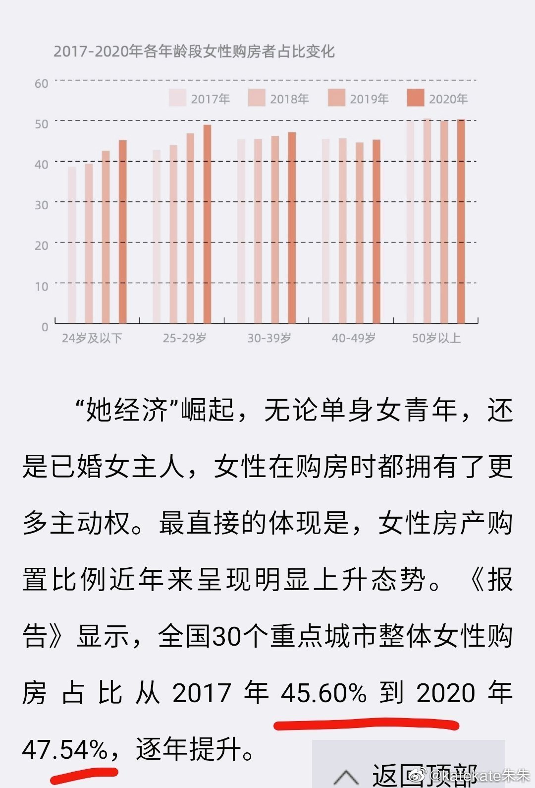
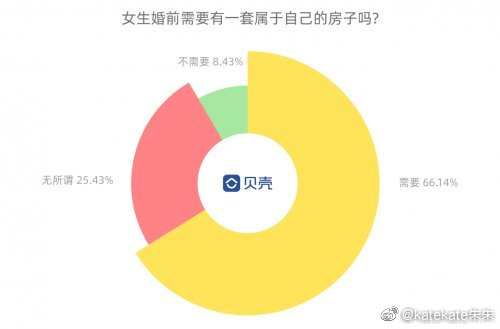
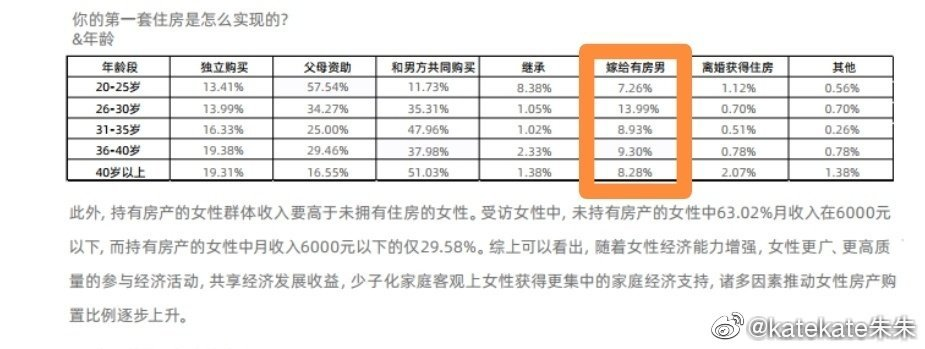
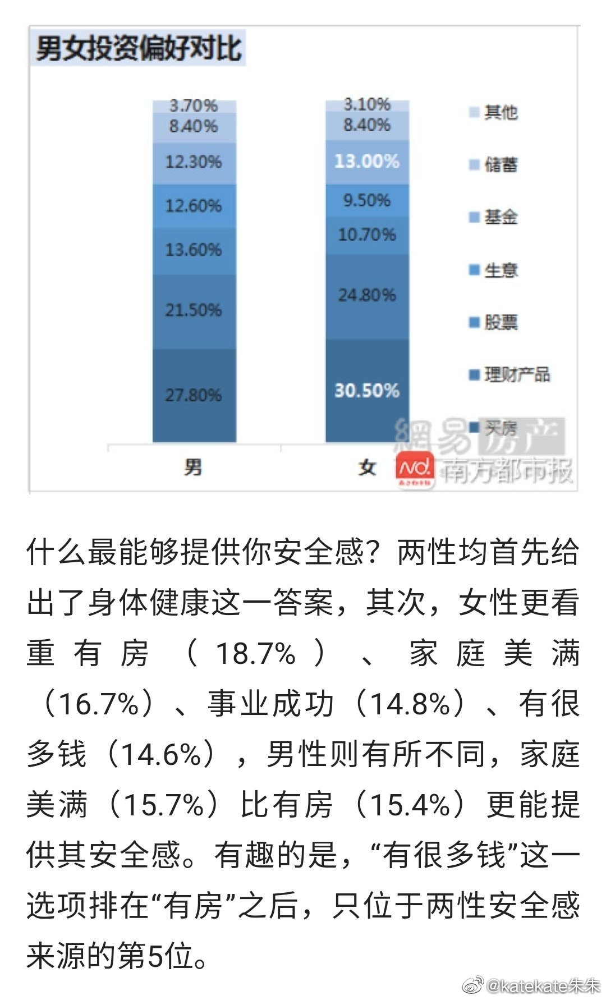

这些数据看起来是好消息。
@katekate朱朱:
#大城市为何女性更多# 昨天看见了大城市女性比例超过男性的消息；
今天又看见，女性在一二线城市买房比例也达到了48％（图1,2），在深圳等地已经远甩男性一大截。
在为女性感到骄傲的同时，我看到很多如图3,4这样声音和质疑：女人是通过婚姻或特殊途径，有人给买房子所以留在了大城市；女性购房比例高是因为家庭买房或者婚姻里都写女性名字
上一个贴数据图太多了，分析不完（有兴趣可移步 网页链接）。我这里重新开一个帖，讨论女性购房的问题。
网页链接）。我这里重新开一个帖，讨论女性购房的问题。
我可以列举几个数据，让大家更清晰一点。
根据贝壳网2021的调查，18-29岁的女性是一线购房主力，而且7成女性认为婚前自己名下要有房 （图5, 6），同源数据显示，靠嫁人实现买房梦的女性不足10％（图7）
此外，网易数据显示，20％女性希望另一半准备好房子，而30％男性希望另一半准备好房子（图8），这个我是比较惊讶的，想躺着的男性比例居然比较高，之前没有了解过男性这方面的想法。
同源数据显示女性每个月花在房上的钱比男性略高一点点（图9），女性比男性更把有房子当作自己安全感＋幸福感＋底气的来源（图9）。
另外，女性认为房子是更重要更好的投资，在自己花钱买房这件事情是绝不手软的 （图10）
----------------
另外值得一提的是，中国出生性别比例排名156，世界倒数第一，初高中教育女性比例排名124，但一到高等教育女性排名1，世界第一（图11）。
我没有看见更高等教育里女性的排名，比如教授院士等，我的估计是这块排名不会很好。更多女性还是加入工作去搞钱和买房了，这也带着中国女性专业技术工的就业率打到了世界第一。值得一提的是中国男女薪水平等水平达到了6/7分（7分满分），还是很不错的。
怎么说呢，从这些数据里可以清晰的看出来，感谢高考的公平性，大家也知道高考没有特别照顾女性，不像一些美国学校，高校也没有安排女性比例录取标准的。女性开局抓一把破破烂烂牌，最最公平的高考反而是女性一生里加的最大的buff。
相反一些男性经常说的，＂女士优先＂和＂女士礼让＂给女性到来的＂大便宜＂，并没有反应在数据里。
ps：关于第七人口普查的看法，链接网页链接
关于男女消费差异，链接网页链接
今天又看见，女性在一二线城市买房比例也达到了48％（图1,2），在深圳等地已经远甩男性一大截。
在为女性感到骄傲的同时，我看到很多如图3,4这样声音和质疑：女人是通过婚姻或特殊途径，有人给买房子所以留在了大城市；女性购房比例高是因为家庭买房或者婚姻里都写女性名字
上一个贴数据图太多了，分析不完（有兴趣可移步
我可以列举几个数据，让大家更清晰一点。
根据贝壳网2021的调查，18-29岁的女性是一线购房主力，而且7成女性认为婚前自己名下要有房 （图5, 6），同源数据显示，靠嫁人实现买房梦的女性不足10％（图7）
此外，网易数据显示，20％女性希望另一半准备好房子，而30％男性希望另一半准备好房子（图8），这个我是比较惊讶的，想躺着的男性比例居然比较高，之前没有了解过男性这方面的想法。
同源数据显示女性每个月花在房上的钱比男性略高一点点（图9），女性比男性更把有房子当作自己安全感＋幸福感＋底气的来源（图9）。
另外，女性认为房子是更重要更好的投资，在自己花钱买房这件事情是绝不手软的 （图10）
----------------
另外值得一提的是，中国出生性别比例排名156，世界倒数第一，初高中教育女性比例排名124，但一到高等教育女性排名1，世界第一（图11）。
我没有看见更高等教育里女性的排名，比如教授院士等，我的估计是这块排名不会很好。更多女性还是加入工作去搞钱和买房了，这也带着中国女性专业技术工的就业率打到了世界第一。值得一提的是中国男女薪水平等水平达到了6/7分（7分满分），还是很不错的。
怎么说呢，从这些数据里可以清晰的看出来，感谢高考的公平性，大家也知道高考没有特别照顾女性，不像一些美国学校，高校也没有安排女性比例录取标准的。女性开局抓一把破破烂烂牌，最最公平的高考反而是女性一生里加的最大的buff。
相反一些男性经常说的，＂女士优先＂和＂女士礼让＂给女性到来的＂大便宜＂，并没有反应在数据里。
ps：关于第七人口普查的看法，链接
关于男女消费差异，链接
- 


- 
- 


- 